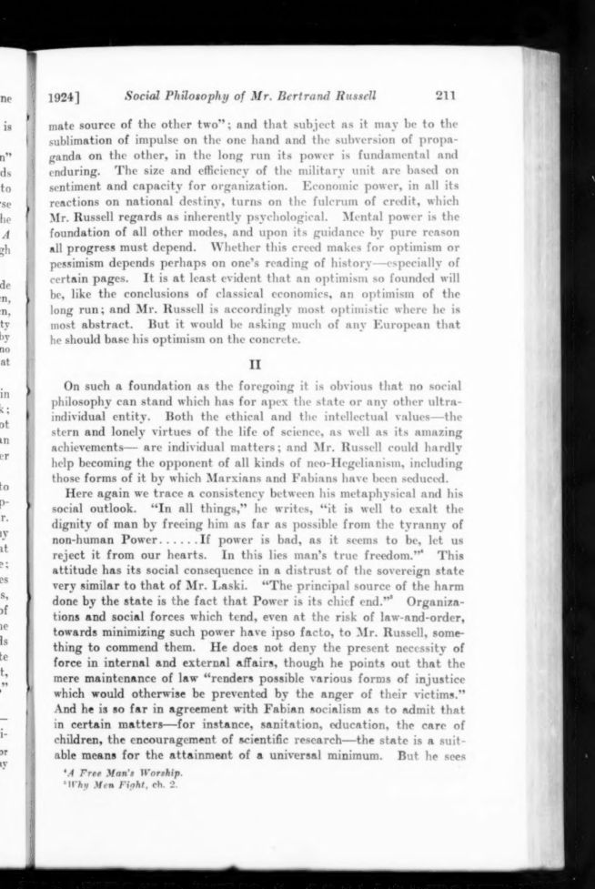

Gearhart, 1924: as equações de Hayes e os custos que não são salário
Leitura: 5 min
Martin A. Gearhart refaz as contas de H. Gordon Hayes e mostra que, se a máquina tiver custos que não sejam trabalho e espera, o nível dos salários passa a decidir entre o método mecânico e o manual.


Novecentos dólares contra mil e duzentos: com essa conta, refeita a partir das equações de H. Gordon Hayes, Martin A. Gearhart mostra em que condição Hayes teria razão. A tese de Hayes, resumida por Gearhart, é que uma alta da taxa geral de salários não leva os empresários a trocar trabalho por máquinas, e que, inversamente, uma queda geral não os leva a trocar máquinas por trabalho. As equações de Hayes supõem que a máquina é produto só de trabalho e espera. Se a hipótese for correta, escreve Gearhart, a conclusão é válida como proposição de longo prazo, mantido o resto constante.
O que dizem as equações de Hayes?
Gearhart usa os dados do próprio Hayes: uma máquina que custa 40 anos-dia de trabalho, juro de 5%, 1 ano-dia para operá-la e 4 anos-dia para fazer o mesmo trabalho à mão. Com o custo do método mecânico igual a juros sobre o trabalho incorporado na máquina mais o trabalho de operação, o método mecânico custa 3 anos-dia contra 4 do manual. A vantagem relativa não depende do nível dos salários: com o ano-dia a US$ 300, a comparação é US$ 900 contra US$ 1.200; a US$ 200, US$ 600 contra US$ 800; a US$ 150, US$ 450 contra US$ 600. Em todos os casos a máquina é mais econômica, e o mesmo valeria para as outras duas equações de Hayes.
O que muda quando a máquina tem outros custos?
Foi C. O. Fisher quem questionou a hipótese de que a máquina é só trabalho e espera. Hayes admitiu que há outros fatores no preço das máquinas, mas sustentou que, se os salários dobrassem, a renda dos recursos naturais incorporados na máquina também dobraria. Gearhart pergunta por que isso aconteceria sempre, e se a renda do terreno da fábrica e os salários da gerência também subiriam na mesma proporção. Se não subirem exatamente na mesma proporção, a mudança dos salários levará à substituição de trabalho por máquinas, ou o contrário.
A ilustração acrescenta US$ 200 por ano de outros custos ao método mecânico, iguais nos três níveis de salário. No nível mais alto, US$ 900 mais US$ 200 ficam abaixo de US$ 1.200, e a máquina continua mais econômica; no intermediário, US$ 600 mais US$ 200 igualam US$ 800, e a escolha é indiferente; no mais baixo, US$ 450 mais US$ 200 superam US$ 600, e o método manual passa a ser o mais econômico. Gearhart não afirma que esses custos ficariam constantes, mas, partindo de um equilíbrio, teriam de subir na mesma proporção dos salários, ou mais, para validar a tese de Hayes.
Por que as rendas não acompanhariam os salários?
Se a alta de salários viesse de uma redução da oferta de trabalho, escreve Gearhart, haveria motivo para esperar que as rendas em geral caíssem, e não subissem, porque haveria mais recursos naturais disponíveis em relação ao trabalho. As rendas das terras em que as máquinas podem ser usadas com vantagem tenderiam a subir, e também as das terras que fornecem as matérias-primas das máquinas, mas não necessariamente na proporção dos salários.
Tudo depende da escassez desses recursos. Se a terra que fornece o recurso for muito escassa, como a que produz a madeira rara citada por Fisher, a renda poderá subir mais do que os salários; se for relativamente abundante, embora não gratuita, provavelmente subirá menos. Gearhart fecha com os Estados Unidos, onde uma das causas mais importantes do baixo custo das máquinas e do uso extenso do método mecânico seria a abundância de ferro, carvão e madeira, com os quais, junto com o trabalho e outros fatores, se fazem as máquinas.
“A abundância de recursos de ferro, carvão e madeira disponíveis.” (the abundance of iron, coal, and timber resources available)
Na minha leitura
Na minha leitura, a comunicação é um exercício de aritmética que isola a hipótese decisiva do argumento de Hayes: a neutralidade dos salários na escolha de técnica depende de que todos os custos da máquina sejam trabalho e espera. Basta um custo que não acompanhe os salários para que o nível salarial volte a pesar.
Lida ao lado da comunicação de Morrison, a de Gearhart chega ao mesmo lugar por outro caminho: o que decide é a proporção entre trabalho e recursos naturais, e a dotação americana de ferro, carvão e madeira aparece como explicação para a mecanização do país.
Glossário
- Ano-dia
- unidade de trabalho das equações de Hayes (year day), a que Gearhart atribui valores de US$ 300, US$ 200 e US$ 150.
- Espera
- na teoria do capital da época, o adiamento do consumo remunerado pelos juros.
- Renda
- pagamento pelo uso de recursos naturais e terrenos.
- Escolha de técnica
- decisão entre métodos de produção que usam fatores em proporções diferentes.
Fontes
- An Issue in Economic Theory: “The Rate of Wages and the Use of Machinery” (II) — Martin A. Gearhart (Princeton University) (pp. 284–286). Internet Archive (número completo, PDF)
- Edição completa, com os demais artigos: Nº 186 do Arquivo.
Documento em domínio público (EUA, publicado antes de 1931), via JSTOR Early Journal Content e Internet Archive. Resumo e comentário do autor deste site, sem afiliação com a American Economic Association. Encontrou um erro? Escreva: a correção é publicada no próprio texto, com data.
← Morrison, 1924: por que salários mais altos levam a mais máquinas ↑ Nº 186 · Commons e o capitalismo dos tribunais; Bauer e o valor das concessionárias